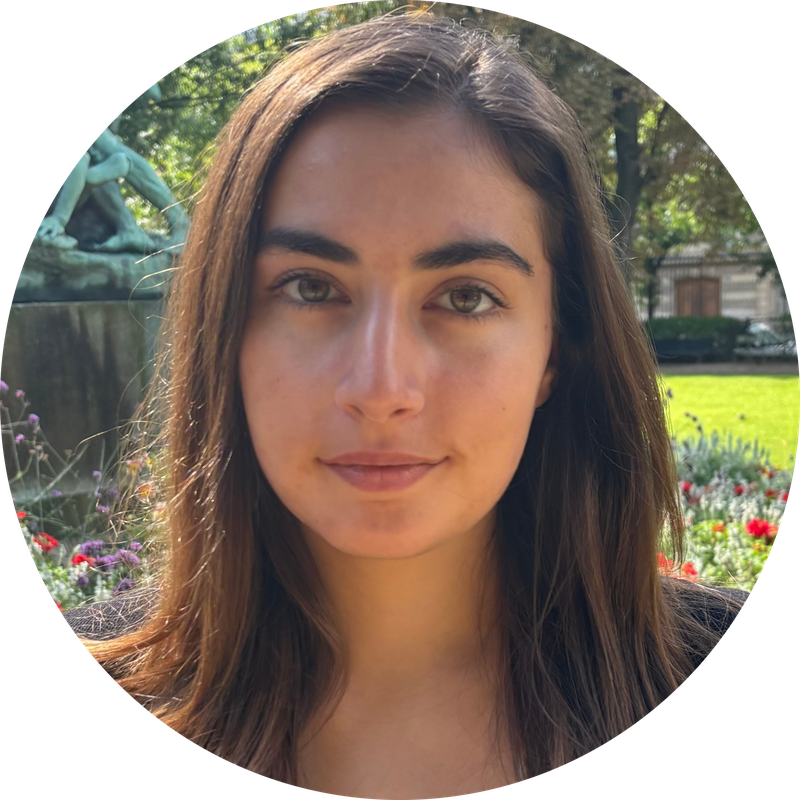

Yasmina Abukhadra
Software Engineer at Wing · M.S. Computer Science (AI), Stanford
I'm a software engineer at Wing, Alphabet's autonomous drone delivery company. I recently completed an M.S. in computer science (AI) at Stanford, and I hold a B.S. in computer science and mathematics from Yale.
My recent research has focused on improving the efficiency of learning-based systems for the physical world. In Stanford's Autonomous Systems Lab, I worked on deciding when and where vision-language planners for robots should spend test-time compute. Before that, I did research in computational neuroscience, quantum computing, and biomedicine.
Publications
Robotics & AI
Scaling test-time compute (chain-of-thought depth, model size, memory) in embodied planners increases latency, tokens, and FLOPs, with uneven gains in task success. DIRECT is a lightweight router that uses the scene and task to decide how much compute each step gets.
Computational Neuroscience & EEG
Biological & Biomedical Research
Selected Projects
Failure Probability Estimation for Robotic Grasping
Compared direct estimation, importance sampling, and adaptive importance sampling for estimating how often a simulated parallel-jaw gripper fails to hold an object under randomized poses and sensor noise. Found the methods disagreed (about 1.4% vs. 4.6–4.9% failure at 1,000 trials), analyzed potential sources of the discrepancy, and suggested directions for future work.
Keeping the Lights On for Campus: Deep Q-Learning for Microgrid Optimization
Modeled a university campus microgrid as a Markov decision process and learned control policies that balance solar generation, battery storage, and grid purchases, using UC San Diego microgrid data as a proxy for Stanford. A deep Q-learning policy achieved lower costs than greedy and random baselines.
BERT SCOPE: Extending minBERT with SimCSE, Ensembling & PANDA
Multi-task language model for sentiment analysis, paraphrase detection, and semantic similarity. Led the contrastive-learning implementation and the PANDA extension, which fine-tunes on demographically perturbed sentence pairs to reduce bias.
Unraveling the Past: GNNs for Ancient Scroll Reconstruction
Applied graph neural networks to the patch-stitching step of virtually unwrapping carbonized Herculaneum scrolls. Built upon a CT-scan-to-graph pipeline and compared GCN, GraphSAGE, GIN, GAT, and a custom DGCNN for layer classification, winding-angle regression, and noise detection. The DGCNN ran ~10× faster than the existing physics-based solver.
Experience
Research
- Student Researcher, Autonomous Systems LaboratoryMar 2026 – PresentStanford University · Robotics and embodied AI
- Senior Research Project, Ding LabFall 2022Yale University · Mitigation of rotational noise in quantum computing
- Student Researcher, Bhattacharjee LabSep 2021 – May 2022Yale University · Quantum algorithms for cognitive neuroscience
- Student Researcher, Blumenfeld Lab (Hahn Fellow)Feb 2020 – Sep 2021Yale School of Medicine · Machine learning and EEG
- Student Researcher, Shah LabSummer 2019Brigham and Women's Hospital · Brain cancer immunotherapy
- Student Researcher, Parney LabSummer 2018Mayo Clinic · Brain cancer immunology
Industry & Teaching
- Software EngineerJul 2023 – PresentWing (Alphabet)
- Software Engineering InternSummer 2022Wing (Alphabet)
- Undergraduate Learning AssistantFall 2022Yale University · CPSC 323: Systems Programming and Computer Organization
Education
- M.S. Computer Science, Artificial Intelligence Specialization2023 – 2026Stanford University
- B.S. Computer Science and Mathematics2019 – 2023Yale University · Phi Beta Kappa, Magna Cum Laude